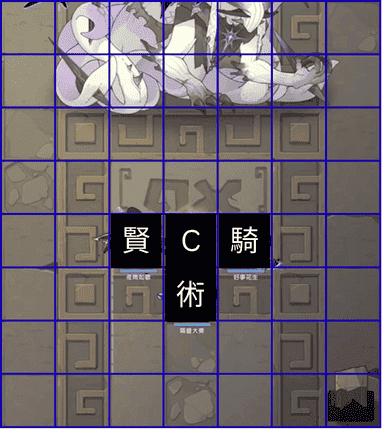
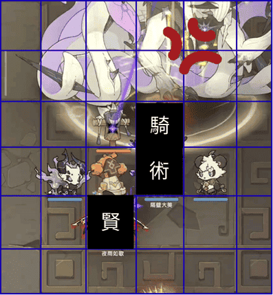
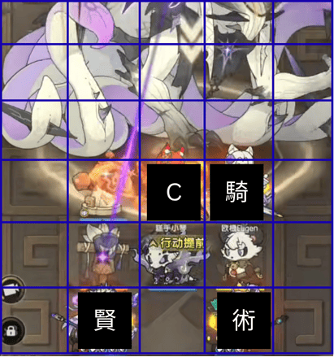

恭喜你找到彩蛋！

這是一個小小的驚喜，感謝你的探索！

這是一個小小的驚喜，感謝你的探索！

不保證適用於所有職業，需實測確認。 目前尚無其他職業的站位資料可供參考。
補充：此站位理論上具備一定通用性，但鬥士適用性可能較不穩定。

騎士與賢者應盡量保持固定站位，避免移動，並使草人貼近 Boss。
此時攻擊可同時命中草人與 Boss，達到近似雙倍輸出的效果。
術士因機制會產生位移，若技能位移距離可控，可考慮不攜帶水龍。
主 C 的影響仍需進一步觀察

鬥士可能會向中間移動並佔據主 C 位置，導致騎士嘲諷後 Boss 偏向右側。
此情況可能影響賢者的輸出角度，並有機率使「絕境」無法同時命中 Boss 與草人。
另外，若賢者攜帶水龍並發生前移，可能轉為橫向攻擊Boss，進一步降低技能覆蓋效率。
混沌時，攻擊順序大致為：主 C → 術士 → 賢者 → 騎士。
如果使用 初始站位 為降低幻獸對站位的影響，建議賢者攜帶暗夜，相較冰狗更為穩定。
暗夜會在第一輪出現，若由術士攜帶，可能干擾整體站位。
術士攜帶冰狗後，其實體是否會佔據位置仍不確定，需進一步實測。
主要用於調整走位，使角色更容易接近 Boss。 若位移控制穩定，可視情況調整是否攜帶。
主要功能為嘲諷並限制 Boss 行動，提升整體站位穩定性。
用於提高效命與加快破韌效率，提升整體輸出節奏。